Statistics for Data Science
A Beginner's Guided Tour
Mean → Spread → Distributions → Probability → Sampling → Z-Test
Dataset: Indian Engineering Student Placement (CGPA, study hours, skills, placement)
Roadmap
- Why statistics? Population vs Sample
- Central tendency — mean, median, mode
- Dispersion — variance & standard deviation
- Distributions & the Normal curve
- Probability basics
- Standard Normal & Z-scores
- Sampling techniques + CLT
- Hypothesis testing & the Z-test
Every section has a hands-on code cell in code/stats_practicals_slidewise.ipynb.
Our dataset at a glance
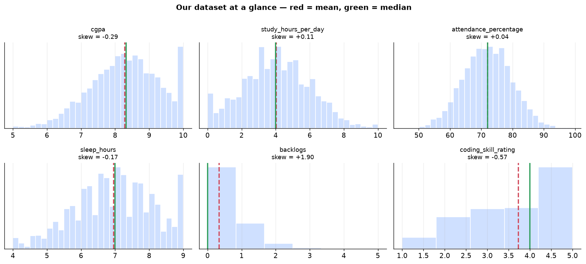
5,000 engineering students · red dashed = mean · green = median · look at the skew values
Why does a Data Scientist need Statistics?
| Business question | Statistical tool |
|---|
| What is a typical student's CGPA? | Mean / Median / Mode |
| Are students similar or very different? | Variance / Std Dev |
| What shape does the data have? | Distributions |
| How rare is a CGPA of 9.5? | Z-score, Normal curve |
| Can't survey 50,000 students — now what? | Sampling |
| Did the new training actually work? | Hypothesis testing |
Statistics = making confident decisions from incomplete data.
Population vs Sample
Population
Every unit you care about.
All engineering students in India
Described by parameters: μ, σ, N
Sample
The subset you measured.
The 5,000 rows in our CSV
Described by statistics: x̄, s, n
We use the sample to estimate the population. That gap is exactly why hypothesis testing exists.
Population vs Sample — the picture
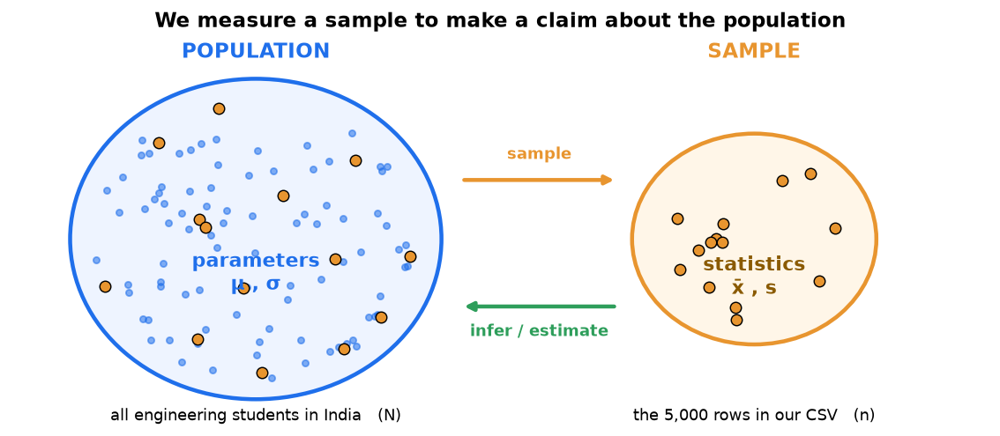
A number describing the population is a parameter (μ, σ).
A number describing the sample is a statistic (x̄, s). We use statistics to estimate parameters.
Types of Data
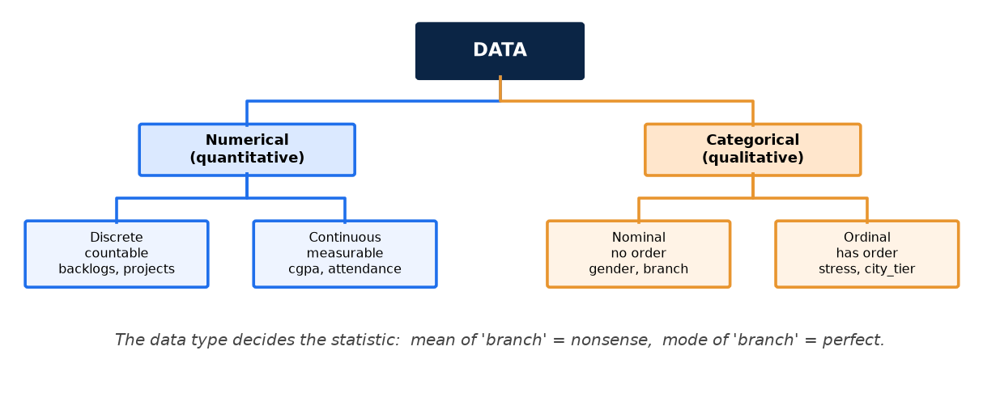
Mean of branch = nonsense. Mode of branch = perfect.
The data type decides the statistic.
Part 1
Measures of Central Tendency
One number to describe them all
Mean
\[ \bar{x}=\frac{\sum x_i}{n} \]
6,7,7,8,9 → 7.4
Uses all data · outlier-sensitive
Median
Middle of sorted data
6,7,7,8,9 → 7
Robust to outliers
Mode
Most frequent value
→ 7
Only option for categories
Symmetric vs Skewed — see it
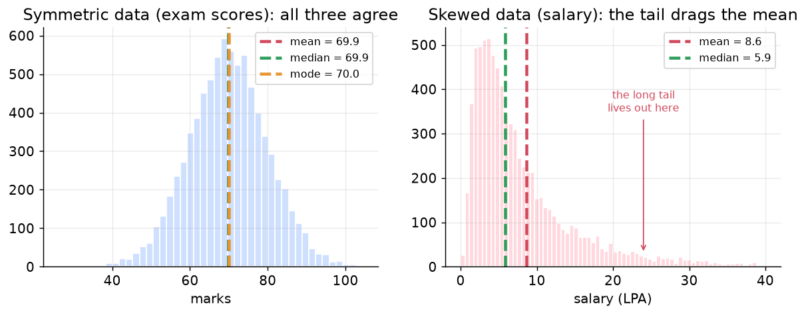
Left: symmetric → mean = median = mode, pick any.
Right: skewed → the mean is dragged toward the tail, the median stays with the crowd.
The Outlier Demo 💥
| Monthly salaries | Mean | Median |
|---|
| 30k, 35k, 40k, 45k, 50k | 40k | 40k |
| … + one CEO at 1,00,00k | 17,00k | 42.5k |
The mean says "average salary is ₹17 lakh/month" — a lie.
The median tells the truth.
Rule: symmetric → mean · skewed/outliers → median · categorical → mode
The classic textbook picture
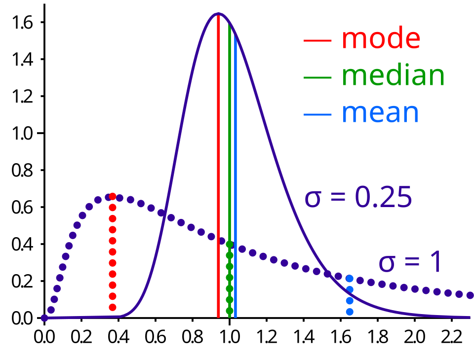
Two skewed distributions. The mode sits at the peak, the median splits the area in half, and the mean is dragged furthest into the tail.
Cmglee, CC BY-SA 3.0, via Wikimedia Commons
Part 2
Dispersion: Variance & Std Deviation
Why the mean alone is dangerous
Two classes, both average 7.0 CGPA:
Class A
7.0, 7.0, 7.0, 7.0, 7.0
Spread = 0 → totally consistent
Class B
4.0, 4.0, 7.0, 10.0, 10.0
Huge spread → two very different groups
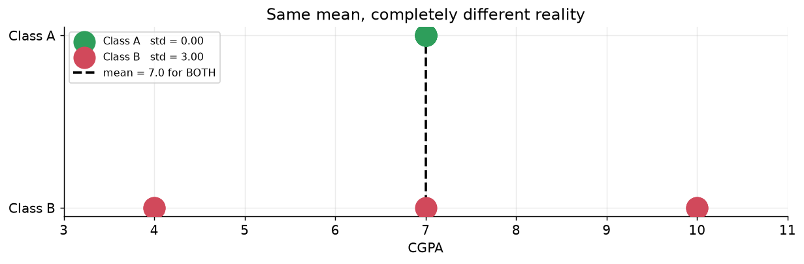
Variance
Population
\[ \sigma^2=\frac{\sum (x_i-\mu)^2}{N} \]
Sample
\[ s^2=\frac{\sum (x_i-\bar{x})^2}{n-1} \]
Why square? Raw deviations always sum to 0 — positives cancel negatives. Squaring removes signs and punishes big deviations more.
Why n−1? (Bessel's correction) A sample's mean sits too close to its own points → spread is underestimated. Dividing by the smaller n−1 corrects the bias.
Standard Deviation
\( s = \sqrt{s^2} \)
Variance is in squared units (CGPA² — meaningless).
The square root brings us back to the original unit.
Plain English: "the typical distance of a data point from the mean."
⚠️ Interview trap: pandas .var() uses ddof=1, numpy .var() uses ddof=0. Pass ddof=1 to numpy for sample data.
Work it out by hand (once!)
Data: 2, 4, 4, 4, 5, 5, 7, 9 n = 8
- Mean = 40 / 8 = 5
- Deviations: −3, −1, −1, −1, 0, 0, 2, 4
- Squared: 9, 1, 1, 1, 0, 0, 4, 16 → Σ = 32
- Population: 32/8 = 4 → σ = 2
- Sample: 32/7 = 4.57 → s = 2.14
IQR & the boxplot outlier rule
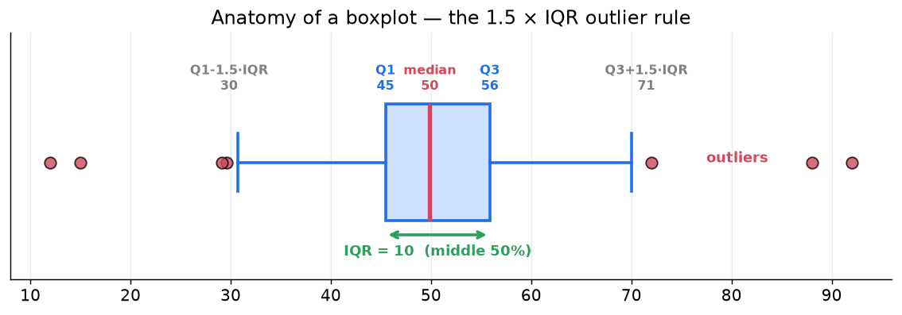
- IQR = Q3 − Q1 (the middle 50% of data)
- Outlier if < Q1 − 1.5·IQR or > Q3 + 1.5·IQR
Every boxplot you have ever seen is drawing exactly this — now you can read one.
Boxplot ↔ the bell curve
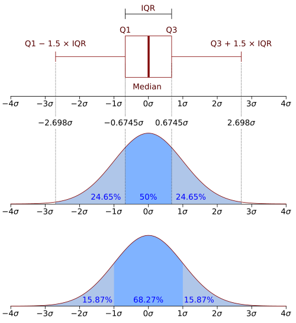
The box holds the middle 50% (≈0.67σ each side); the whiskers reach ≈2.7σ, covering 99.3% of a normal population.
Jhguch at en.wikipedia, CC BY-SA 2.5, via Wikimedia Commons
Shape vocabulary
| Shape | Tail | Relationship | Example |
|---|
| Symmetric | none | mean ≈ median ≈ mode | height, CGPA |
| Right skew (+) | right | mean > median > mode | salary, backlogs |
| Left skew (−) | left | mean < median < mode | exam scores (easy test) |
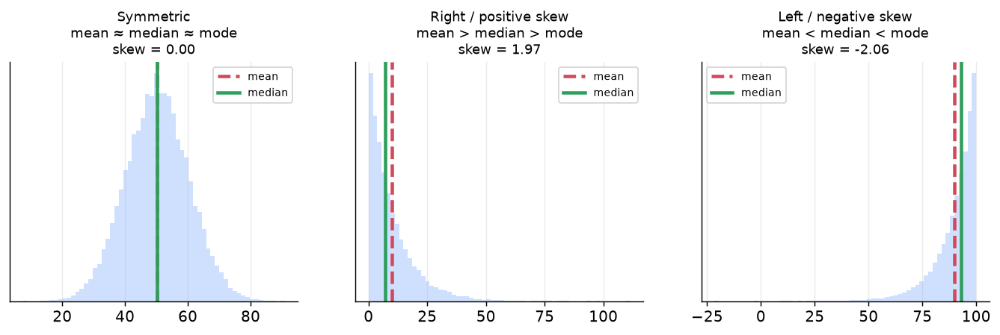
Memory trick: the tail pulls the mean.
Negative vs positive skew
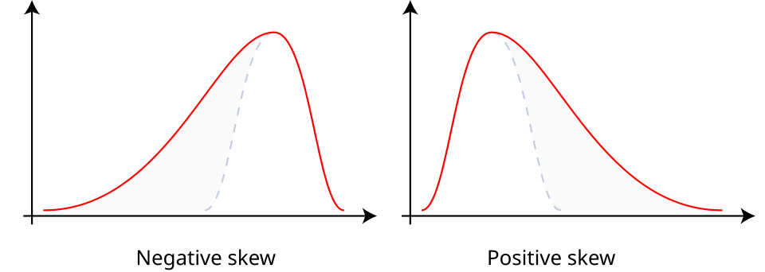
The name comes from where the tail points, not where the bulk of the data sits — the most common beginner mix-up.
Rodolfo Hermans (Godot) at en.wikipedia, CC BY-SA 3.0, via Wikimedia Commons
Distributions to recognise
| Distribution | Models | Example |
|---|
| Uniform | all outcomes equally likely | fair die |
| Bernoulli | one yes/no trial | student placed? |
| Binomial | # successes in n trials | how many of 100 placed |
| Poisson | # events per interval | tickets per hour |
| Normal | natural measurements | height, CGPA, errors |
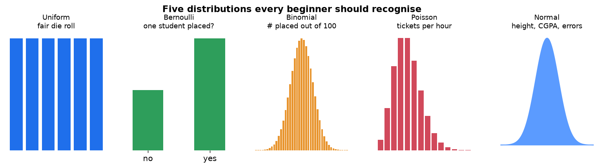
The Normal Distribution
\[ f(x)=\frac{1}{\sigma\sqrt{2\pi}}\,e^{-\frac{(x-\mu)^2}{2\sigma^2}} \]
- Bell-shaped & perfectly symmetric about μ
- Mean = Median = Mode
- Described by just two numbers: μ and σ
- Total area under the curve = 1
μ moves it, σ stretches it
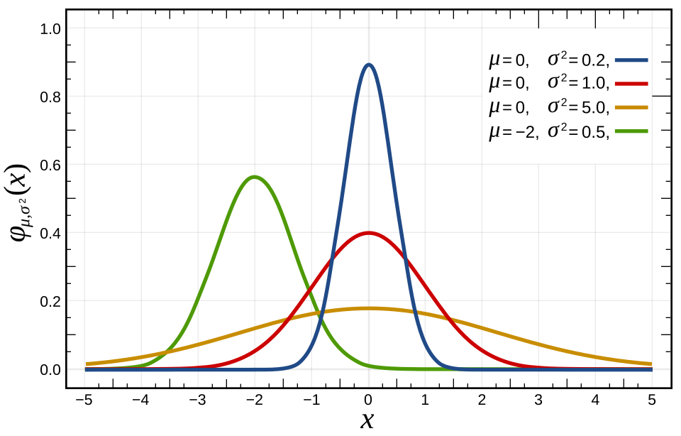
Change μ → the whole curve slides left/right.
Change σ² → the curve gets fatter and flatter (or thinner and taller). The area always stays 1.
Inductiveload, public domain, via Wikimedia Commons
The Empirical Rule: 68 – 95 – 99.7
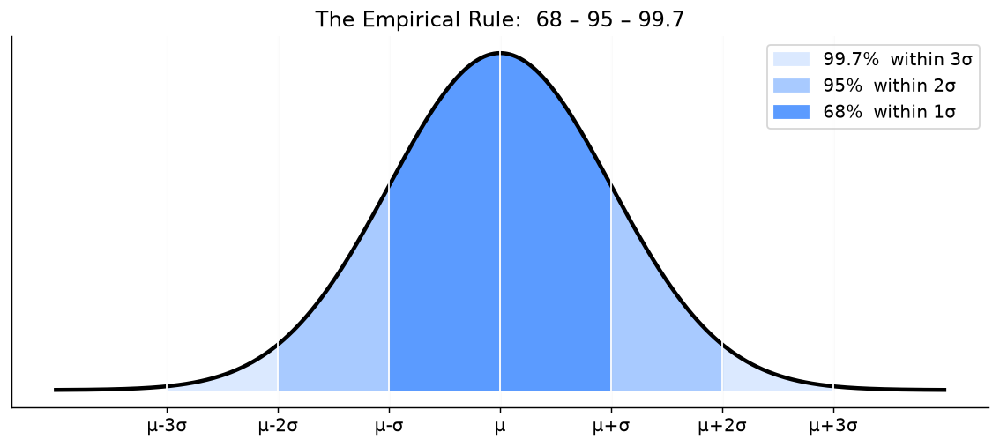
If CGPA ~ N(7.0, 0.8):
68% → 6.2 to 7.8
95% → 5.4 to 8.6
99.7% → 4.6 to 9.4
A student with CGPA 9.5 is beyond 3σ → top ~0.1%.
This is also the 3-sigma outlier rule.
The reference version
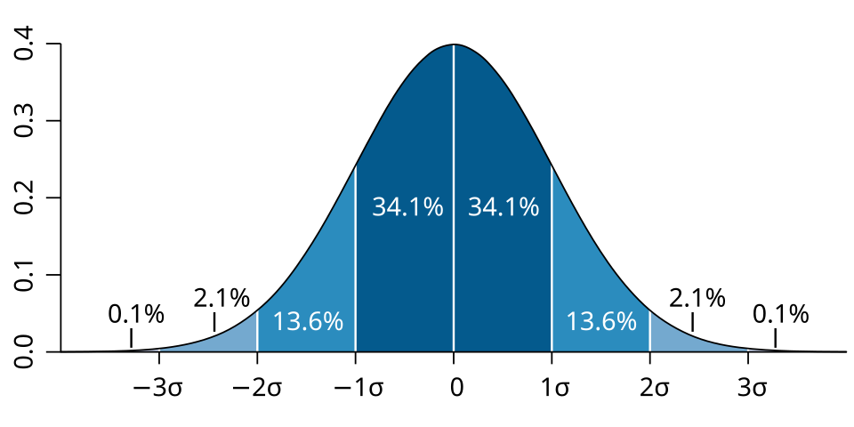
Each band is one σ wide. Read them individually: 34.1% + 34.1% = 68.2% within 1σ,
then +13.6% each side → 95.4%, then +2.1% each side → 99.6%.
M. W. Toews, CC BY 2.5, via Wikimedia Commons
Part 4
Just Enough Probability
Probability basics
\[ P(A)=\frac{\text{favourable outcomes}}{\text{total outcomes}},\qquad 0\le P(A)\le 1 \]
| Rule | Formula |
|---|
| Complement | \(P(A')=1-P(A)\) |
| Addition | \(P(A\cup B)=P(A)+P(B)-P(A\cap B)\) |
| Independent | \(P(A\cap B)=P(A)P(B)\) |
| Conditional | \(P(A|B)=P(A\cap B)/P(B)\) |
| Bayes | \(P(A|B)=\dfrac{P(B|A)P(A)}{P(B)}\) |
The same rules, as pictures
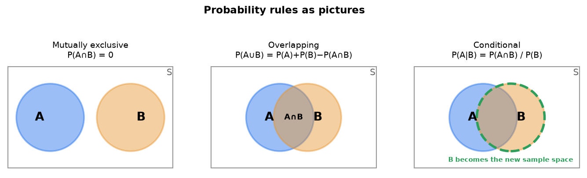
Conditional probability just shrinks the sample space: once you know B happened, B is the only world left.
Continuous probability = AREA
- \(P(X = \text{exactly }7.000) = 0\) — a single point has zero width
- \(P(6.5 < X < 7.5)\) = shaded area → meaningful
| You want | Python |
|---|
| \(P(Z\le z)\) | norm.cdf(z) |
| \(P(Z>z)\) | 1 - norm.cdf(z) |
| \(P(a<Z<b)\) | norm.cdf(b) - norm.cdf(a) |
Remember: cdf(1.645)≈0.95 · cdf(1.96)≈0.975 · cdf(2.576)≈0.995
Part 5
Standard Normal & Z-Scores
Standardization
Standard Normal = Normal with μ = 0, σ = 1 → \(Z \sim N(0,1)\)
\( z=\dfrac{x-\mu}{\sigma} \)
"How many standard deviations away from the mean is this value?"
z = 0 → average · z = +2 → 2 SD above · z = −1.5 → 1.5 SD below
Example: CGPA ~ N(7.0, 0.8), a student scores 8.6
z = (8.6 − 7.0)/0.8 = 2.0 → top 2.5% of the class
Three students on one curve
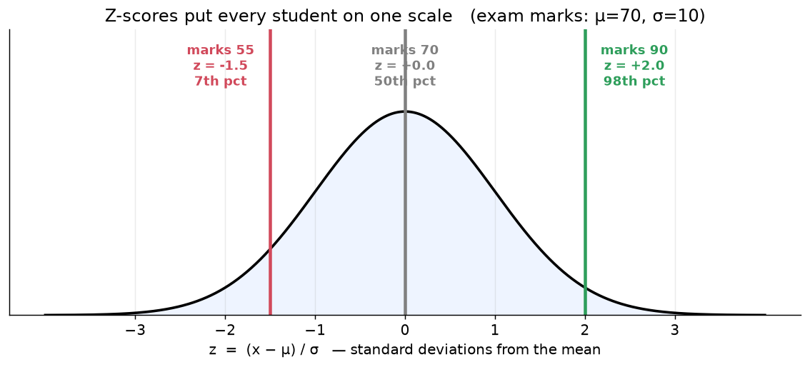
Raw marks differ from exam to exam — the z-score does not. That is what makes it comparable.
Why standardize? 3 reasons
- Compare apples to oranges — is a CGPA of 8.5 better than an attendance of 92%? Convert both to z.
- One table for all — a single Z-table works for every normal distribution.
- Machine Learning needs it — KNN, SVM, PCA, gradient descent all break when features are on different scales.
StandardScaler is literally this formula.
from sklearn.preprocessing import StandardScaler
X_scaled = StandardScaler().fit_transform(X) # (x - mean) / std
Part 6
Sampling Techniques
Probability sampling
| Technique | How | Use when |
|---|
| Simple Random | pure lottery | homogeneous population |
| Stratified | split by group (branch), sample each proportionally | subgroups matter / imbalanced |
| Systematic | every k-th record, k = N/n | ordered lists, assembly lines |
| Cluster | randomly pick whole clusters (colleges) | geographically spread |
Non-probability (fast but biased — don't use for inference): convenience, judgement, quota, snowball.
The four techniques, side by side
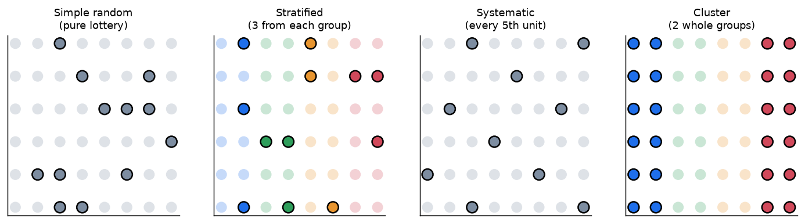
Faded = population · outlined = selected · colours = strata / clusters
Stratified guarantees every group is represented. Cluster is cheap but risks missing whole groups.
Central Limit Theorem 👑
Take many random samples of size n and plot their means.
That distribution is approximately Normal — no matter what shape the original population had (for n ≥ 30).
\( \bar{X} \sim N\!\left(\mu,\ \dfrac{\sigma^2}{n}\right) \)
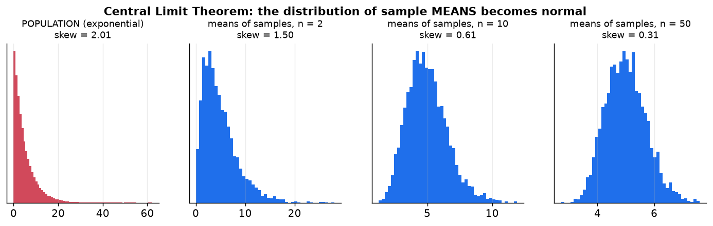
Why it's huge: income data is horribly skewed, but the average income of samples behaves normally. That is what licenses us to use the Z-test on almost anything.
CLT in one diagram
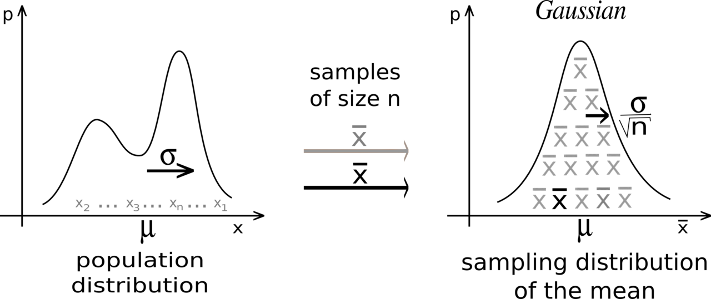
The population can be any shape at all (here, two humps). Take samples of size n, average each one, and the distribution of those averages is Gaussian with spread σ/√n.
Mathieu ROUAUD, CC BY-SA 4.0, via Wikimedia Commons
Part 7
Hypothesis Testing & the Z-Test
The courtroom analogy
H₀ — Null
"Nothing is happening."
The status quo. Assumed true until evidence says otherwise.
μ = 7.0
H₁ — Alternative
What you want to prove.
μ ≠ 7.0 (two-tailed)
μ > 7.0 (one-tailed)
We never "accept" H₀ — we reject or fail to reject it.
"Not guilty" ≠ "innocent".
α, p-value, and the decision
- α = false-alarm risk we accept, usually 0.05
- p-value = probability of data this extreme if H₀ were true
| If… | Then… |
|---|
| p ≤ α | Reject H₀ — statistically significant ✅ |
| p > α | Fail to reject H₀ — not enough evidence |
| Test | Critical z (α = 0.05) |
|---|
| Two-tailed | ±1.96 |
| One-tailed | ±1.645 |
| Two-tailed (α = 0.01) | ±2.576 |
Where is the rejection region?
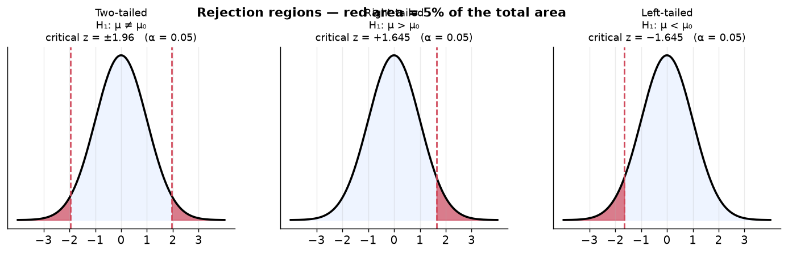
α is the total red area. Two-tailed splits it 2.5% + 2.5% → the cut-off moves further out (1.96 vs 1.645).
Type I vs Type II errors
| H₀ is TRUE | H₀ is FALSE |
|---|
| Reject H₀ | ❌ Type I (α)
false positive | ✅ Correct
Power = 1−β |
| Fail to reject | ✅ Correct | ❌ Type II (β)
false negative |
Type I = convicting an innocent person.
Type II = letting a guilty person walk free.
When do I use a Z-test?
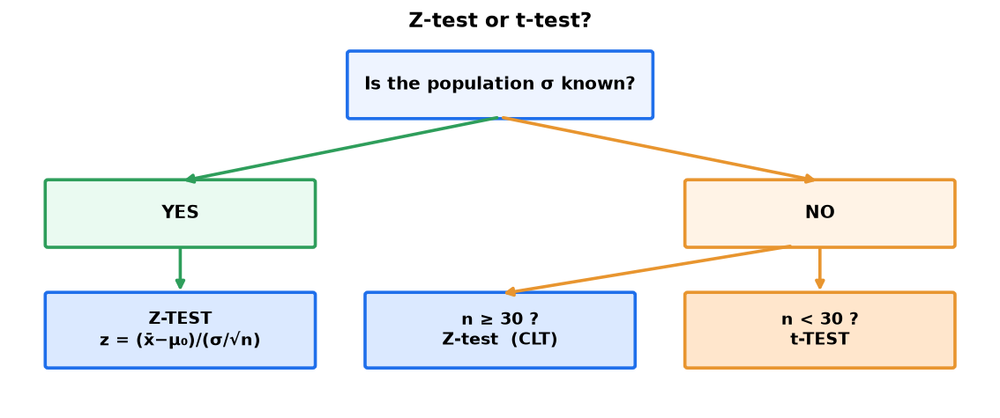
\( z=\dfrac{\bar{x}-\mu_0}{\sigma/\sqrt{n}} = \dfrac{\text{signal}}{\text{noise}} \)
Two-sample: \( z=\dfrac{\bar{x}_1-\bar{x}_2}{\sqrt{\sigma_1^2/n_1+\sigma_2^2/n_2}} \) ·
Proportion: \( z=\dfrac{\hat p-p_0}{\sqrt{p_0(1-p_0)/n}} \)
The 6-step recipe
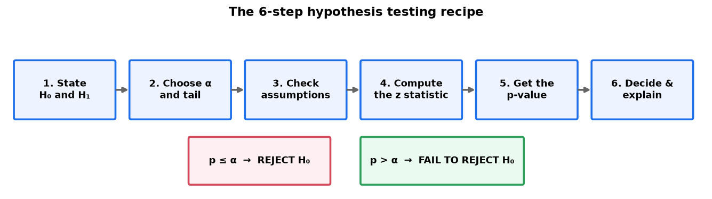
Step 6 is the one beginners skip — a p-value nobody can explain is a wasted analysis.
Worked example 🎯
Claim: a printer is advertised at 20 pages per minute, σ = 1.5 ppm.
A reviewer tests n = 36 printers and measures x̄ = 19.4 ppm. Is it slower than advertised?
- H₀: μ = 20 · H₁: μ < 20 (left-tailed)
- α = 0.05 → critical z = −1.645
- n = 36 ≥ 30, σ known ✔
- SE = 1.5/√36 = 0.25 → z = (19.4 − 20)/0.25 = −2.4
- p = Φ(−2.4) = 0.0082
- 0.0082 < 0.05 → Reject H₀
Only a 0.82% chance of measuring a speed this low if the printer really did 20 ppm → the advertised speed is not supported.
The same example, drawn
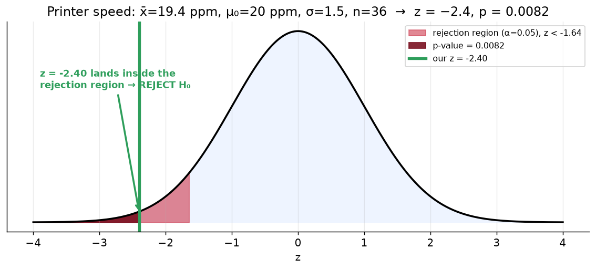
Light red = the 5% we agreed to risk (α). Dark red = the p-value, the actual evidence.
p-value smaller than α ⇒ reject H₀.
Confidence Interval — the other side of the coin
\( CI = \bar{x} \pm z_{\alpha/2}\cdot\dfrac{\sigma}{\sqrt{n}} \)
Printer example: \(19.4 \pm 1.96 \times 0.25 = [18.91,\ 19.89]\) ppm
20 ppm is not inside the interval → reject H₀. Same conclusion, richer information — the real speed is roughly 18.9 to 19.9 ppm.
Correct reading: "If we repeated this study many times, 95% of such intervals would contain the true mean."
NOT "there is a 95% chance μ is in this interval."
What "95% confidence" really means
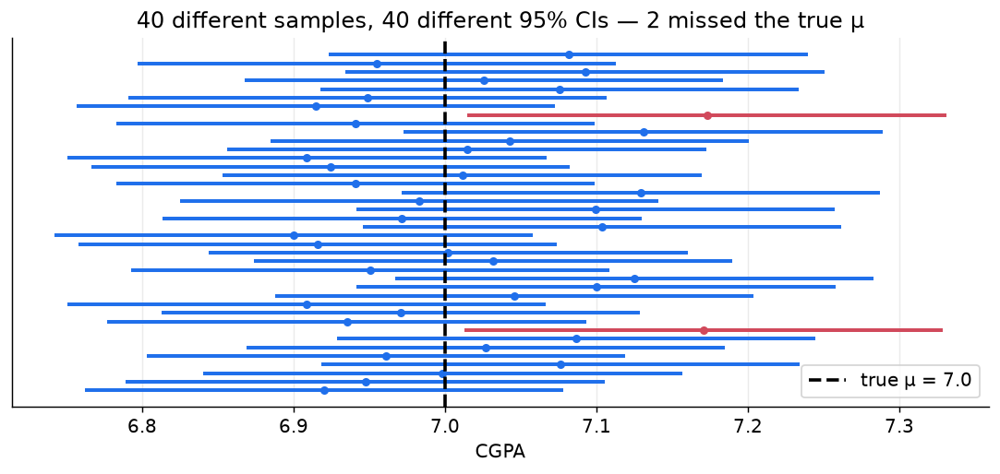
40 samples → 40 different intervals. About 5% miss the true μ (shown in red).
The procedure is 95% reliable — not any single interval.
Statistical ≠ Practical significance
With n = 1,000,000, a CGPA difference of 0.001 becomes "highly significant" (p < 0.001).
Is it worth changing your entire curriculum for? No.
Always report an effect size (e.g. Cohen's d) next to the p-value, and ask:
"Is this difference big enough to matter in the real world?"
Cheat sheet
| Concept | Python |
|---|
| Mean / Median / Mode | df.c.mean() / .median() / .mode() |
| Variance / Std Dev | df.c.var() / df.c.std() |
| IQR | df.c.quantile(.75) - df.c.quantile(.25) |
| Skewness | df.c.skew() |
| Z-score | scipy.stats.zscore(df.c) |
| Normal area | scipy.stats.norm.cdf(z) |
| Critical value | scipy.stats.norm.ppf(1-alpha/2) |
| Random sample | df.sample(n=100, random_state=42) |
| Stratified sample | df.groupby('branch').sample(frac=.1) |
| Z-test | statsmodels…weightstats.ztest |
Now go code it 👩💻
Open Statistics/code/stats_practicals_slidewise.ipynb
Detailed notes → Statistics/Statistics_Beginner_Notes.md
Reference diagrams from Wikimedia Commons — credits in assets/web/CREDITS.md